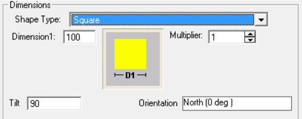
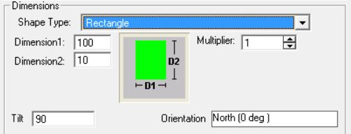
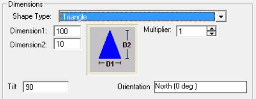
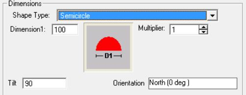
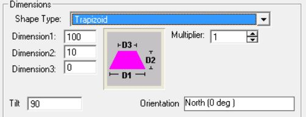
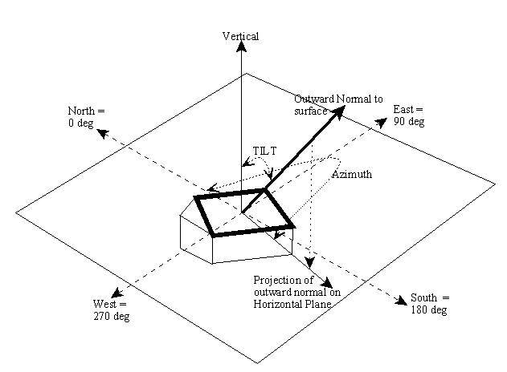
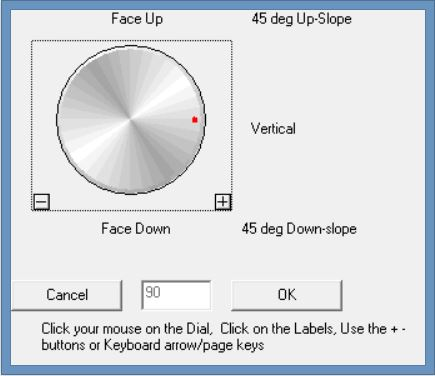

Wall Data Input Form
|
Wall Data Input Form |
Wall Info

Acronym - A short description (up to 20 characters)
Description - A detailed description (up to 50 characters)
Select Construct - Allows selection of the construct (sometimes called wall type or envelope type) for the wall. Clicking this button opens a list of all constructs in the Project. You can then select a construct for the wall from the list. If a suitable construct is not available in the list, you must first add (or build) the construct in Project Resources before being able to select that construct for the wall.
Location - The explanation given here applies to Walls, Roofs and Floors.
Exterior - Implies that the surface is exposed to the outside (eg. Exterior Walls, Exterior Roofs, Floor that are raised above grade and exposed to the outside).
Underground - Implies that the surface is on or below ground (eg. basement walls, on-grade and below grade floors).
Adjacent to another zone - Implies that the surface is adjacent to another previously defined zone (eg. partition walls and ceiling between Stories). In this, case the zone to which this is adjacent to must be selected using the selection button  .
.
The note below applies ONLY to version 1.21 and below
Important Note: The Adjacent zone selected here must always be a previously defined zone in the project hierarchy. It cannot be a succeeding zone in the project hierarchy. So the first zone in the project cannot have adjacent surfaces defined. But the second zone in the project can have surfaces that is adjacent to the first zone. However it cannot have surfaces defined that are adjacent to a third zone which comes after this one in the hierarchy.
Beginning Version 1.22, the above restriction does not apply and the user is not required to order the zones as above. The program automatically attempts to reorder zones as required and issues an error message when circular references in adjacent envelopes are discovered. A circular reference is one in which, for example, an envelope in Zone A is adjacent to Zone B, and another envelope in Zone B is adjacent to Zone A.
ASHRAE Category - Allows the user to select the appropriate ASHRAE category for the building component. This determines the maximum allowable assembly U-value for that component in the baseline (reference) building
Is Store Front Per ASHRAE 90.1-2010 5.5.4.4.1(c) - Check or Uncheck if this wall serves as a store front, as layed out by ASHRAE 90.1-2010 Section 5.5.4.4.1 (c). This will allow for the fenestration area on this wall to be ignored when determine the total vertical fenestration area percentage fo the building.
Dimensions
Shape Type - There are various shape types that can be entered. Note that the required number of dimensions will become active and should be entered upon selecting a shape type. The various shape types are:
Square

Rectangle

Triangle

Semicircle

Trapezoid

Rectangle with Semicircle

Rectangle with Triangle

If the shape selected is a Rectangle with Triangle or Trapezoid then the user has to enter 3 dimensions in the dimension boxes.
If the shape selected is a Square then the user has to enter 1 dimension.
For rest of the shapes only 2 dimensions have to be specified.
Dimensions [ft] - The required dimensions based on the particular shape selected.
Multiplier - Used to specify the total number of identical wall panels located in the same plane. If two or more walls are identical, use this entry rather than adding more walls to your project.
Placement

The figure above gives the general principles of determining the Tilt and Azimuth angles. An outward normal is first drawn from the exterior side of the surface. An outward normal is a line that is perpendicular to the plane of the surface in question. The tilt angle is the angle made by the outward normal with the vertical axis as shown in figure.
The azimuth is the direction the surfaces faces. For vertical surfaces, it is the direction the outward normal faces. To obtain the direction for a non vertical surface, first project the outward normal to the horizontal plane. The direction the projected line faces is the Azimuth, with North = 0, East = 90, South = 180 and West = 270.
Tilt - Surface tilt. Vertical = 90 (eg. Vertical Wall); Horizontal facing up = 0 (eg. Flat roof); Horizontal facing down = 180 (eg. floor). Click cell to set value. The following dialog opens:

Orientation (Azimuth) - Surface orientation (North = 0, South = 180, West = 270, East = 90). Click cell to set value. The following dialog opens:

NOTE: Orientation of Walls, Roofs and Floors are relative to the building orientation. Any value other than zero for the building orientation will rotate all Walls, Roofs and Floors correspondingly during calculation.
Miscellaneous
The following are not user editable and are provided for information only. The defaults are set by the Application.
Gnd Refl - Ground Reflectance is the solar reflectance of the ground.
Infl Coef - Infiltration Coefficient is the infiltration flow coefficient used to compute the infiltration resulting from cracks in a wall.
Outside Emiss - Outside Emissivity is the Emissivity of the exterior side of the wall.
Inside Vis Refl - Inside Visible Reflection is the fraction of light reflected by the interior side of the surface.
Inside Sol Abs - Inside Solar Absorbance is the fraction of radiation absorbed by the interior side of the surface. Radiation may fall on an interior surface through fenestration placed on other surfaces (eg. Sunshine falling on floors through a window or skylight).